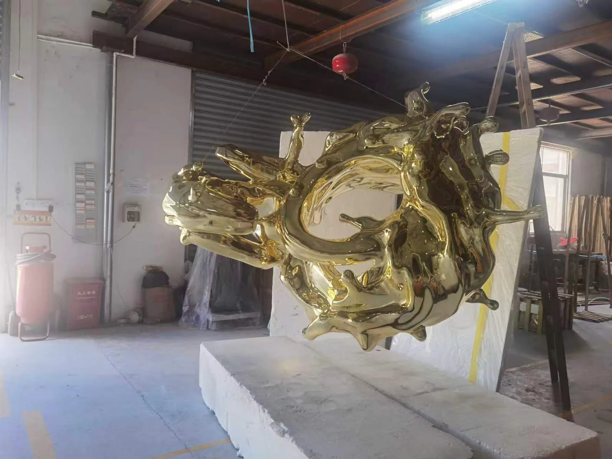

Production study
Gold-Coloured Abstract Sculpture: Curves & Finish
A workshop photograph of a gold-coloured abstract form offers a starting point for reviewing reflections, viewing angles and support requirements.
Article published:

Read the reflective curves
The photograph shows an irregular gold-coloured form with loops, projecting curves and workshop supports. Reflected lines change across its surfaces. These visible features help describe the work; they do not establish its physical dimensions, material grade, coating system or installation destination.
Approve the finish under project lighting
For a new commission, compare the main viewing angles and reflected lines under the intended lighting. Agree a finish sample and the appearance views to be approved. A gold-coloured photograph is a visual reference, not a specification for a particular metal or surface treatment.
Coordinate support and transport
The workshop supports are visible, but the image does not explain a permanent fixing system. Request the approved orientation, base interfaces and handling arrangement for the proposed piece. Projecting areas need a packing and access review before transport scope is agreed.
Prepare a brief for your own project
- Approved views, overall dimensions and clearly labelled units.
- Finish reference, lighting context and the person approving appearance.
- Proposed base, destination access and handling responsibilities.
The article records what the supplied photograph shows and what to review for a new commission. Material specifications, dimensions, artwork rights and delivery scope must be agreed for your project.
Discuss your projectQuestions before fabrication
Is the gold colour proof of a particular material?
No. The image records colour and reflections. Material, coating, finish sample and acceptance reference must be specified and approved for the commissioned work.
Can we request this type of form for a hotel?
A hotel application can be reviewed using your site plans and approved design direction. The workshop photograph does not establish an installed hotel project or permission to reproduce an existing design.